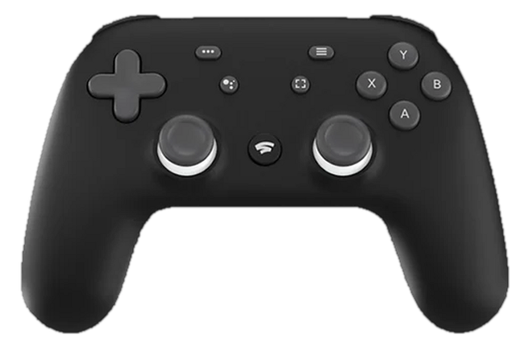

How can we help?
Tell us what went wrong or what you'd like Pad Companion to do. Each report becomes a ticket we track until it's fixed or shipped.
bug_report
Report a bug
Something doesn't work, feels wrong, or crashed.
lightbulb
Suggest a feature
An idea that would make the pad or the app better.
Before you report, check the known limits: some things are set by the pad or by Windows.
Don't have Pad Companion yet? Download it free for Windows.
infoKnown limits
Measured on real pads. These come from the controller's firmware or from Windows, not from Pad Companion.
- vibrationNo rumble over Bluetooth
- Windows' Bluetooth controller driver rejects the Stadia pad's vibration report, and Windows doesn't let apps reach the pad any other way. Rumble works over the USB cable.
- speed125 Hz, not 250 Hz or more
- Windows already asks the pad for input every 4 ms over USB, but the pad's firmware sends 125 reports a second (a steady 8 ms). No driver or setting can raise it.
- bluetoothBluetooth arrives in small bursts
- Windows gives the pad a 10 ms link; reports arrive a few at a time. For the lowest latency, use the cable.
- screenshot_monitorNo capture through Epic Games
- Epic has no screenshot or recording feature. The Capture button uses Xbox Game Bar, Steam, NVIDIA or AMD instead.
task_alt
Almost done
GitHub opened in a new tab with your ticket ready. Check it, attach anything useful, then press Create.
content_copyYour report is too long to send in a link. Copy it, then paste it into the new ticket.